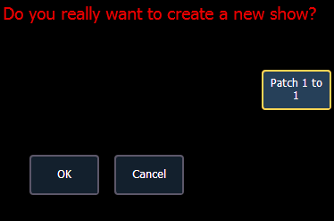
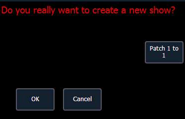

Eos treats fixtures and channels as one and the same, meaning each fixture is assigned a single control channel number. Individual parameters of that fixture, such as intensity, focus, color, and beam are also associated with that same channel number but as additional lines of channel information.
The Patch is used to associate a channel with addresses and device types. Once a channel is patched to an address or addresses, and the output is connected to a device (for example a dimmer, moving light, or accessory), the channel will then control that device.
Patching can be done via two different methods: manually entering a patch and by patching devices using RDM via the Device List. RDM allows bi-directional communication between the desk and any RDM devices over RDM or Ethernet. See Using Device List .
For manual patching, you are required to only enter the simplest data to patch a device and begin programming your show, such as the channel number, the device type (if needed), and address. When you provide more information in the patch, you will have more detailed control and improved function during operation.
One or more devices may be patched to a single channel. For example, you may want to patch a group of dimmers to the same channel. In addition you may patch multiple devices to the same channel for building compound or accessorized fixtures. For example, a Source Four® with a color scroller and a gobo changer may be patched to a single channel. This is referred to as a compound channel. See Creating multipart and compound channels .
When you open a new show file, Element 2 can create a 1-to-1 patch. This means that the patch will automatically have channel 1 patched to address 1, channel 2 to address 2, and so on up to the maximum channel count of your console. When outlined in yellow, the {Patch 1 to 1} button is selected, and a 1-to-1 patch will be created.


Depending on your situation, you may need to create a custom patch, which associates certain addresses with certain channels.
Note: You can open or merge patch data from other show files, see Partial Patch Opening and Partial Patch Merging for more information.
A 1-to-1 patch can be created from the Clear display. See Clearing the Patch